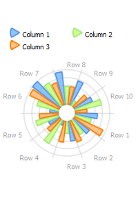
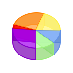

Overview
The Charts module contains a set of viewes compatibles with QAbstractItemModel subclasses.
Each column repsresents a serie of data. Nevertheless, some view, like the simple Pie Chart only use the first column.
The data is converted to float numbers. Non-numeric values (alphabetic characters, for example) are considered equal to zero.
The X-axis values are determined by the corresponding section in the horizontal QAbstractItemModel::headerData.
The label of the series is determined by the corresponding section in the vertical QAbstractItemModel::headerData.
The Charts modul contains three main classes.

|
 |  |
Linear ChartsCurves, points and bars |
Radial ChartsLike a bar charts but in a circle |
Pie ChartsClassic pie charts |